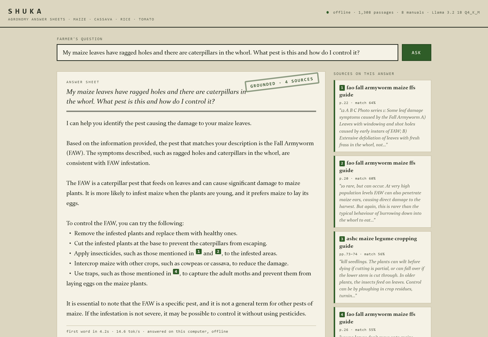

Africa Deep Tech Challenge 2026 · Agriculture
Shuka answers maize, cassava, rice and tomato questions from real extension manuals — cited by page, entirely offline, on an ordinary 8 GB laptop. Where it has no source, it says so.

The problem
Nigeria fields roughly one agricultural extension worker for every few thousand farmers — against a recommended one per thousand. The advice gap decides yields, and it is widest exactly where farming happens: rural areas with weak or unaffordable connectivity, on low-end hardware.
The obvious modern fallback — ask an AI — assumes bandwidth, cloud subscriptions and payment rails most smallholders don't have. So Shuka is built for the people farmers already ask: extension workers, agro-dealers and cooperative offices. One offline laptop at a cooperative becomes an answer desk for a whole community — and over the cooperative's own Wi-Fi hotspot, phones in the room can use it too.
Why grounding is the product
These are real answers the same 1-billion-parameter model gave when we let it speak unsupervised. Each one could cost a farmer a season.
Grow cassava from seeds and harvest in about 3 months
Cassava is grown from stem cuttings and needs 8–24 months. A farmer following this loses the planting season outright.
DangerousPlant 30 maize seeds per hole
Recommended practice is 2 per station. Thirty seeds per hole destroys the stand and wastes a season's seed money.
DangerousStriga is a fungal disease — apply fungicides
Striga is a parasitic weed. Fungicide spend is wasted and the infestation keeps spreading.
DangerousApply 2,4-D herbicide around your cassava
Broadleaf herbicide drift injures or kills cassava — the crop it was asked to protect.
DangerousSo Shuka never lets the model speak unsupervised. The model supplies language; a corpus of real extension literature supplies the facts — and when the corpus is silent, so is Shuka.
How it works
STEP 01
A farmer's question, in plain language — diagnosis, planting calendars, input dosages.
STEP 02
On-device search over 1,308 passages from 8 license-verified manuals — FAO, IITA, CABI, IRRI. Milliseconds, no network.
STEP 03
The model writes only from the retrieved passages. Every claim carries its manual and page number, like a printed bulletin.
STEP 04
No passage clears the relevance floor? The model is never invoked. Shuka says so and points to the extension office.
Evidence
Thirty questions across four crops, plus out-of-scope traps. The same model answered twice: raw, and through Shuka's pipeline. Every answer was graded against the corpus text.
| Configuration | Correct | Partial | Wrong | Dangerous |
|---|---|---|---|---|
| Raw model | 0 | 9 | 12 | 9 |
| Shuka (grounded) | 17 | 10 | 3 | 0 |
Shuka's three failures are safe ones — two over-cautious refusals and one degenerate answer on a question it should have refused. All logged, with fixes, in the published grade sheet.
That is the entire argument for the architecture, measured.
Measured by the contest's own profiler
The sources
Shuka's knowledge is not scraped. It is eight published extension documents — about 850 pages — each license-verified before indexing.
Provenance, URLs and license verification notes for every document — including the ones we found and chose not to index — are in corpus/SOURCES.md.
Run it